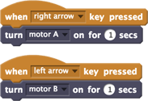

Ligue motores ou luzes por um período de tempo especificado.

Execute um motor específico por 1 segundo quando a tecla de seta para a direita / esquerda for pressionada.

Você pode selecionar um dispositivo compatível com o LEGO WeDo no menu suspenso:
- Se você tem apenas um motor, use a opção "motor", a qual ligará o motor, independentemente de onde ele está conectado no hub WeDo.
- Se você tem dois motores que deseja controlar separadamente, pode usar o "motor de A" com um e "o motor B" com o outro.
- "luzes" liga as luzes, independentemente de onde elas estão conectadas no hub WeDo.
- "tudo" liga todos os motores e luzes conectados.
Para usar ligar para, você precisa de motor(es) WeDo ou luzes conectadas ao computador por meio de um hub LEGO WeDo.